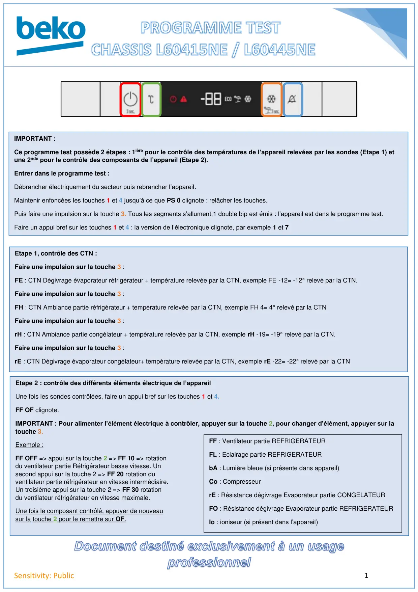
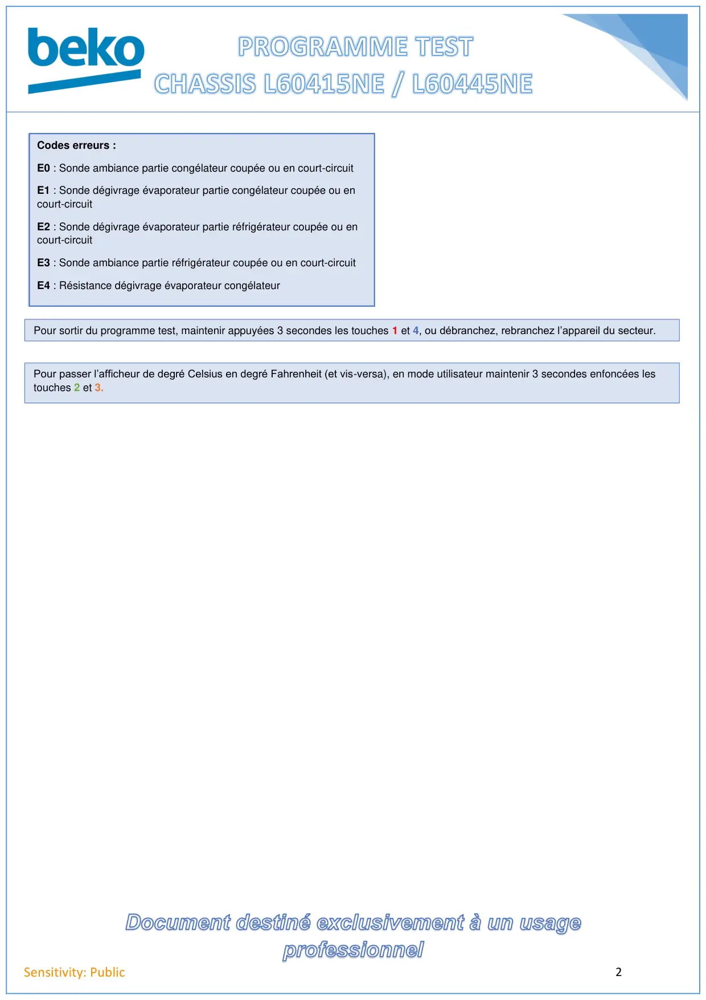

Document destiné exclusivement à un usageprofessionnel1Sensitivity: PublicIMPORTANT :Ce programme test possède 2 étapes : 1ière pour le contrôle des températures de l’appareil relevées par les sondes (Etape 1) etune 2nde pour le contrôle des composants de l’appareil (Etape 2).Entrer dans le programme test :Débrancher électriquement du secteur puis rebrancher l’appareil.Maintenir enfoncées les touches 1 et 4 jusqu’à ce que PS 0 clignote : relâcher les touches.Puis faire une impulsion sur la touche 3. Tous les segments s’allument,1 double bip est émis : l’appareil est dans le programme test.Faire un appui bref sur les touches 1 et 4 : la version de l’électronique clignote, par exemple 1 et 7Etape 1, contrôle des CTN :Faire une impulsion sur la touche 3 :FE : CTN Dégivrage évaporateur réfrigérateur + température relevée par la CTN, exemple FE -12= -12° relevé par la CTN.Faire une impulsion sur la touche 3 :FH : CTN Ambiance partie réfrigérateur + température relevée par la CTN, exemple FH 4= 4° relevé par la CTNFaire une impulsion sur la touche 3 :rH : CTN Ambiance partie congélateur + température relevée par la CTN, exemple rH -19= -19° relevé par la CTN.Faire une impulsion sur la touche 3 :rE : CTN Dégivrage évaporateur congélateur+ température relevée par la CTN, exemple rE -22= -22° relevé par la CTNEtape 2 : contrôle des différents éléments électrique de l’appareilUne fois les sondes contrôlées, faire un appui bref sur les touches 1 et 4.FF OF clignote.IMPORTANT : Pour alimenter l’élément électrique à contrôler, appuyer sur la touche 2, pour changer d’élément, appuyer sur latouche 3.Exemple :FF OFF => appui sur la touche 2 => FF 10 => rotationdu ventilateur partie Réfrigérateur basse vitesse. Unsecond appui sur la touche 2 => FF 20 rotation duventilateur partie réfrigérateur en vitesse intermédiaire.Un troisième appui sur la touche 2 => FF 30 rotationdu ventilateur réfrigérateur en vitesse maximale.Une fois le composant contrôlé, appuyer de nouveausur la touche 2 pour le remettre sur OF.FF : Ventilateur partie REFRIGERATEURFL : Eclairage partie REFRIGERATEURbA : Lumière bleue (si présente dans appareil)Co : CompresseurrE : Résistance dégivrage Evaporateur partie CONGELATEURFO : Résistance dégivrage Evaporateur partie REFRIGERATEURIo : ioniseur (si présent dans l’appareil)
1 / 2
Document destiné exclusivement à un usageprofessionnel2Sensitivity: PublicCodes erreurs :E0 : Sonde ambiance partie congélateur coupée ou en court-circuitE1 : Sonde dégivrage évaporateur partie congélateur coupée ou encourt-circuitE2 : Sonde dégivrage évaporateur partie réfrigérateur coupée ou encourt-circuitE3 : Sonde ambiance partie réfrigérateur coupée ou en court-circuitE4 : Résistance dégivrage évaporateur congélateurPour sortir du programme test, maintenir appuyées 3 secondes les touches 1 et 4, ou débranchez, rebranchez l’appareil du secteur.Pour passer l’afficheur de degré Celsius en degré Fahrenheit (et vis-versa), en mode utilisateur maintenir 3 secondes enfoncées lestouches 2 et 3.
2 / 2